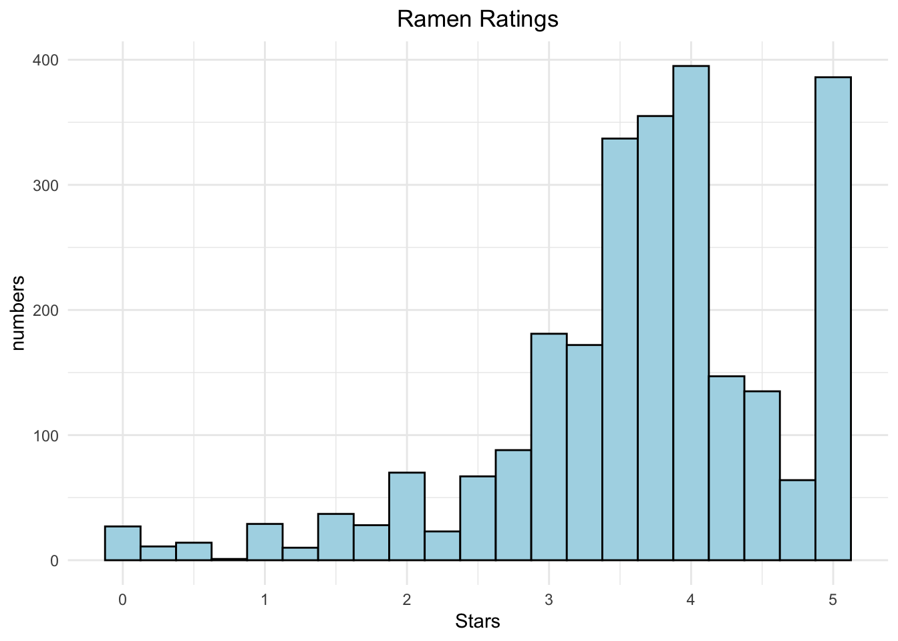
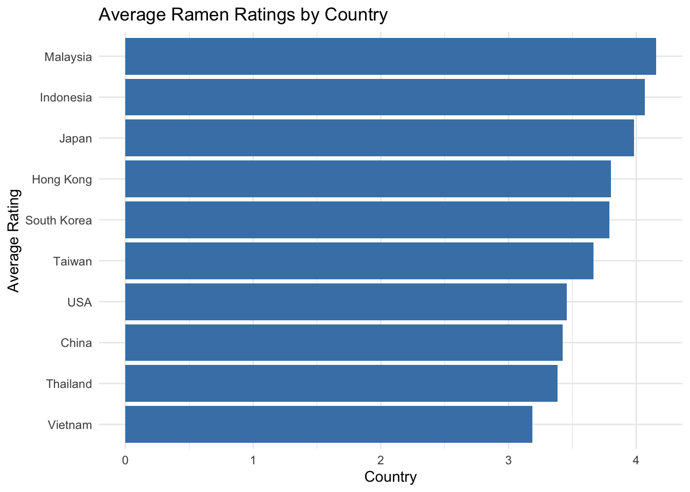

Chapter 6 評分資料
在kabble上下載泡麵評分資料，標題為Ramen Ratings，包含各國泡麵評分資料 https://www.kaggle.com/datasets/residentmario/ramen-ratings/data
6.1 資料概況
導入資料進入R Studio
加載所需的包
資料概況
library(knitr)
library(kableExtra)
library(tidyverse)
ramen_ratings %>%
head(10) %>%
kable("html") %>%
kable_styling() %>%
scroll_box(width = "100%", height = "500px")| Review # | Brand | Variety | Style | Country | Stars | Top Ten |
|---|---|---|---|---|---|---|
| 2580 | New Touch | T’s Restaurant Tantanmen | Cup | Japan | 3.75 | NA |
| 2579 | Just Way | Noodles Spicy Hot Sesame Spicy Hot Sesame Guan-miao Noodles | Pack | Taiwan | 1 | NA |
| 2578 | Nissin | Cup Noodles Chicken Vegetable | Cup | USA | 2.25 | NA |
| 2577 | Wei Lih | GGE Ramen Snack Tomato Flavor | Pack | Taiwan | 2.75 | NA |
| 2576 | Ching’s Secret | Singapore Curry | Pack | India | 3.75 | NA |
| 2575 | Samyang Foods | Kimchi song Song Ramen | Pack | South Korea | 4.75 | NA |
| 2574 | Acecook | Spice Deli Tantan Men With Cilantro | Cup | Japan | 4 | NA |
| 2573 | Ikeda Shoku | Nabeyaki Kitsune Udon | Tray | Japan | 3.75 | NA |
| 2572 | Ripe’n’Dry | Hokkaido Soy Sauce Ramen | Pack | Japan | 0.25 | NA |
| 2571 | KOKA | The Original Spicy Stir-Fried Noodles | Pack | Singapore | 2.5 | NA |
資料總數：2580
## [1] 2580計算國家數量：38個
countries_count <- ramen_ratings %>%
summarise(NumberOfCountries = n_distinct(Country)) %>%
pull(NumberOfCountries)計算品牌數量：355個
brands_count <- ramen_ratings %>%
summarise(NumberOfBrands = n_distinct(Brand)) %>%
pull(NumberOfBrands)計算口味種類數量：2412個
6.2 評分分佈
將Stars列轉換為數字，非數字值將被設為NA
ramen_ratings$Stars <- as.numeric(as.character(ramen_ratings$Stars))
full_score_count <- sum(ramen_ratings$Stars == 5, na.rm = TRUE)繪製評分的直方圖
ggplot(ramen_ratings, aes(x=Stars)) +
geom_histogram(binwidth = 0.25, fill="light blue", color="black") +
theme_minimal() +
ggtitle("Ramen Ratings") +
xlab("Stars") +
ylab("numbers") +
theme(plot.title = element_text(hjust = 0.5))

Figure 6.1: 泡麵評分分佈直方圖
發現評分集中在3.5~4分左右，而5分的品項也有許多，共有386種
## [1] "獲得滿分的泡麵數量： 386"6.3 國家分析
各國泡麵品牌和口味種類為何？ 哪個國家的拉麵獲得了最高的平均評分？
首先計算每個國家平均評分
country_average_rating <- ramen_ratings %>%
group_by(Country) %>%
summarize(AverageRating = mean(Stars, na.rm = TRUE)) %>%
arrange(desc(AverageRating)) %>%
head(10)
kable(country_average_rating)| Country | AverageRating |
|---|---|
| Brazil | 4.350000 |
| Sarawak | 4.333333 |
| Cambodia | 4.200000 |
| Malaysia | 4.154193 |
| Singapore | 4.126147 |
| Indonesia | 4.067460 |
| Japan | 3.981605 |
| Myanmar | 3.946429 |
| Fiji | 3.875000 |
| Hong Kong | 3.801825 |
發現巴西、砂拉越、柬埔寨、馬來西亞、新加坡等國家名列前茅，但是和我們熟悉的既定印象卻有些不同。 因此，進一步看每個國家的品牌數量和口味數量
country_diversity <- ramen_ratings %>%
group_by(Country) %>%
summarize(BrandCount = n_distinct(Brand),
VarietyCount = n_distinct(Variety)) %>%
ungroup() %>%
arrange(desc(VarietyCount))
kable(head(country_diversity))| Country | BrandCount | VarietyCount |
|---|---|---|
| Japan | 58 | 333 |
| USA | 49 | 315 |
| South Korea | 35 | 289 |
| Taiwan | 47 | 222 |
| Thailand | 25 | 178 |
| China | 33 | 156 |
將兩個結果合併
查看國家按平均評分排序的結果
country_analysis <- country_analysis[order(-country_analysis$AverageRating),]
kable(head(country_analysis))| Country | AverageRating | BrandCount | VarietyCount | |
|---|---|---|---|---|
| 1 | Brazil | 4.350000 | 1 | 5 |
| 9 | Sarawak | 4.333333 | 2 | 3 |
| 2 | Cambodia | 4.200000 | 2 | 5 |
| 7 | Malaysia | 4.154193 | 32 | 150 |
| 10 | Singapore | 4.126147 | 10 | 102 |
| 5 | Indonesia | 4.067460 | 19 | 125 |
發現結果不如預期是因為有些國家種類少但單一品項評分高，因此提升排名。 為了避免這種情況，以「口味種類」多寡初步篩選出前十名，在進行評分平均分析。
確定拉麵品種數量排名前10的國家
top_countries_by_variety <- ramen_ratings %>%
group_by(Country) %>%
summarize(VarietyCount = n_distinct(Variety)) %>%
arrange(desc(VarietyCount)) %>%
slice_head(n = 10) %>%
pull(Country)前五名分別是：日本、美國、南韓、台灣、泰國
針對這些國家進行平均評分分析，以水平長條圖呈現
average_rating_top_countries <- ramen_ratings %>%
filter(Country %in% top_countries_by_variety) %>%
group_by(Country) %>%
summarize(AverageRating = mean(Stars, na.rm = TRUE)) %>%
arrange(desc(AverageRating))
ggplot(average_rating_top_countries, aes(x = reorder(Country, AverageRating), y = AverageRating)) +
geom_bar(stat = "identity", fill = "steelblue") +
coord_flip() +
labs(title = "Average Ramen Ratings by Country", x = "Average Rating", y = "Country") +
theme_minimal()

Figure 6.2: 國家Top 10泡麵評分長條圖
結果發現排名依序為馬來西亞、印尼、日本、香港、南韓，而台灣泡麵位居第六名。 且種類豐富、評分高的國家幾乎都是在亞洲，再次驗證亞洲的泡麵風氣盛行！